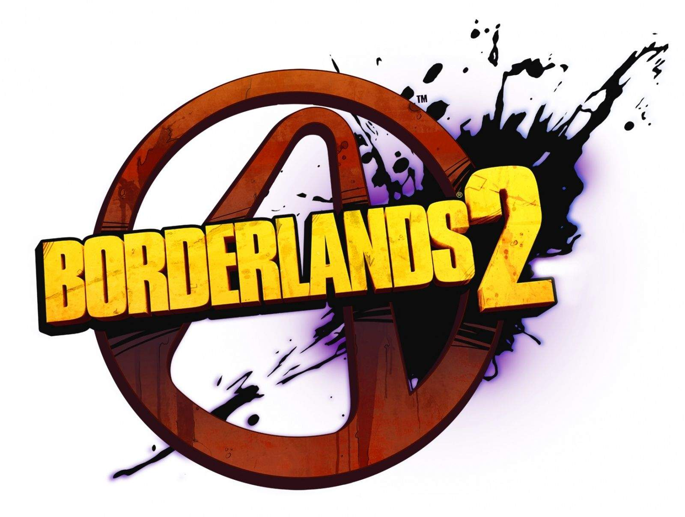
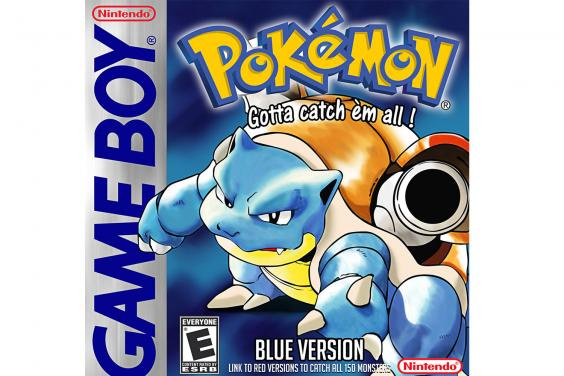

| Image | Title | Developer | Platform | Genre | Rating |
|---|---|---|---|---|---|
|  | Borderlands 2 | Gearbox Software | Xbox 360 | Shooter | 9 |
| Child of Light | Ubisoft Montreal | PC | RPG | 9.3 | |
| Faster than Light | Subset Games | PC | Simulator | 9.6 | |
| Uncharted 4: A Thief's End | Naughty Dog | PlayStation 4 | Action Adventure | 9.3 | |
| Super Mario Galaxy | Nintendo | Wii | Platformer | 9.7 | |
|  | Pokemon Blue | Game Freak | Gameboy | RPG | 10 |